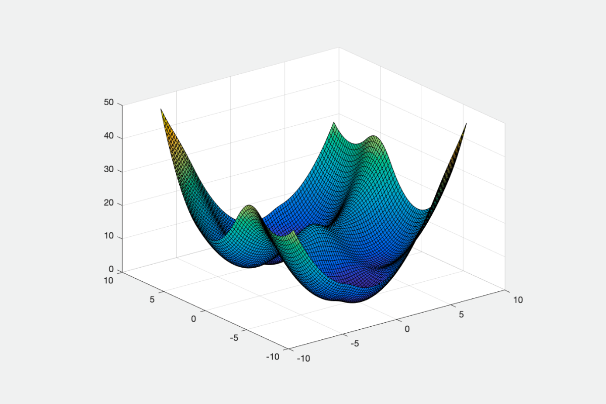
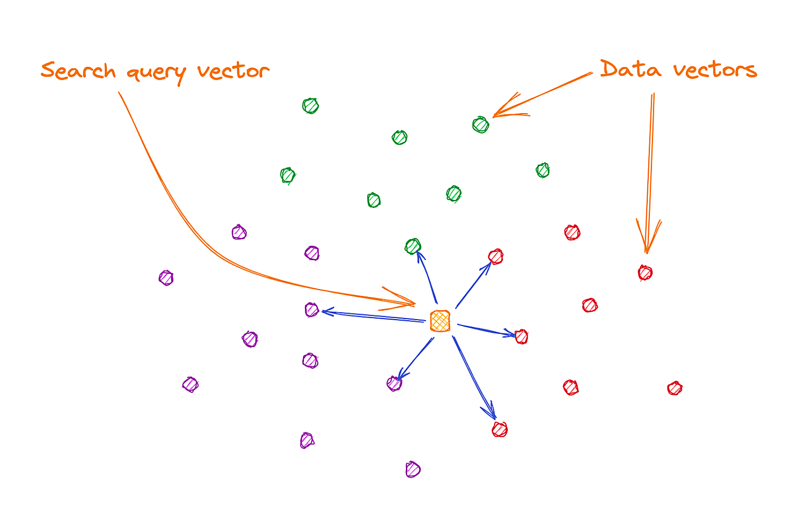

Implemented advanced Retrieval-Augmented Generation (RAG) pipelines combining BM25 & BERT embeddings, plus an LLM-based reranking pipeline. Compared the approaches, along with a Hybrid pipeline, to enhance chunk selection, improve retrieval relevance, and generate accurate responses. (Image source: NVIDIA)

Noa AI is an agentic, bilingual speech-to-speech system built using Python that enables natural voice interaction in both English and Hindi. The system runs entirely through the CLI and features 5 specialized tools - General, Memory, Companion, Web, and Interview, each designed to perform a specific task.
Built a character-level text generation model using PyTorch to generate Shakespearean-like text. The model employs an LSTM with 4 layers of 256 units each, and the training process took nearly 5 hours, and the dataset used was of Shakespeare's writings, sourced from Andrej Karpathy's blog.

Implemented optimization algorithms to minimize a Neural Network loss function. The algorithms include Gradient Descent, Momentum based algorithms, Adaptive learning rate based algorithms, Adam, and its variants. Compared their performance by evaluating the steps taken to converge.

Created a document-query-response engine that processes documents and generates relevant responses to user queries based on the document. The model uses Gemini's text embedding model to create vector embeddings and further, similarity searching and natural language generation is performed.
Developed a Machine Learning model that predicts the engagement level of educational videos for learners. Features extracted from transcripts, audio tracks, and hosting sites are utilized to determine engagement. Employed a Random Forest Classifier, yielding an AUC score of 0.85 and an accuracy of 92%.